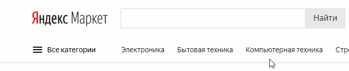

Чтобы правильно описать товар для гос.закупки - нужно создать таблицу в которой указаны параметры товара и их значения.
Например:
| Товар | Параметр | Значение |
|---|---|---|
| Папка | ||
| вместимость, листов | от 100 | |
| формат а4 | да |
Откуда автор взял именно эти параметры?
Из Яндекс.Маркета. Выбрал на свой вкус.
А обязательно пользоваться какими-то "маркетами"?
Необязательно. Если вы в совершенстве знаете товар и все его праметры на память.
Вот так, максимально сжато, будет выглядеть получение такой таблицы при помощи яндекс.маркета и расширения для браузера Chrome GosMarket.

Можно ли cкопировать эти параметры отсюда или из какого-либо другого источника?
Очень осторожно.
Описание товара должно решать ВАШИ задачи.
Бездумно скопировав чужую документацию вы рискуете упустить что-то важное или наоборот внедрить в закупку излишние требования, который могут негативно повлиять на её результат.
Что можно упустить?
Пример: если для товара “молоко” не указать параметр “цельное” - даже не сомневайтесь - вам поставят порошковое.
Запомните:
На основании перечисленных вами требований вам поставят наиболее дешёвый вариант.
В т.ч. если вы не предъявили никаких требований вообще (забыли).
Что можно внедрить лишнего?
Если для товара “мяч футбольный” указать материал “кожа натуральная”, то такой заказ превратится в абсурд, поскольку из натуральной кожи сейчас выпускают исключительно сувенирные мячи, для подарков юбилярам, “чтобы пахли”. Кроме их нестойкости к влаги они ещё и стоят значительно дороже синтетических.
Таким образом вы закупите непригодный товар по завышенной цене.
Как не упустить важное?
Вам придётся стать товароведом. Это неотъемлемая часть работы контрактного управляющего.
Для начала избавьтесь от иллюзии, что можно (найти в инете) скопировать некий шаблончик где будет всё необходимое.
Вам придётся принимать решения (и нести ответственность) самостоятельно.
*Я работаю над тем чтобы предоставлять наборы “оптимальных” требований
для наиболее популярных групп товаров, но пока это в стадии разработки.
Я (и мой сервис GosMarket) поможем вам.
Попробуйте найти товар на Яндекс.Маркете.
Если вашего товара нет на ЯМ, то я настойчиво рекомендую вам “поиграться” с товаром “папка”, как написано в пунктах ниже. Или посмотреть видео.
поверьте, это очень эффективно помогает понять чем тут мы вообще занимаемся.
Посмотрите в правую колонку страницы товара на Яндекс.Маркете, там (после блока "Категории") будут основные фильтры для описания вашего товара.
Не исключено, что их будет вполне достаточно.
Вы ни в коем случае не обязаны указывать все* эти параметры.
Но обязательно стоит задуматься о каждом из них! Как они влияют на закупку.
*Если описание товара логически состоит из одной строчки "платки хлопчатобумажные 20х20 см", то и не
нужно городить огород (можно даже не делать никакой таблицы, эта строчка просто включается в контракт и всё).
Возможно вы уже слышали про якобы главное правило “нельзя указывать товарный знак”.
*Кстати, если вы пользуетесь браузером Googlе Chrome и у вас установлено расширение GosMarket,
то оно удаляет со страниц Я.Маркета все фильтры, связанные с производителем итп. Чтоб они не мешались вам.
На самом деле полностью правило звучит так:
Параметры товара (или их комбинация) должны допускать участие в закупке двух и более производителей.
Если “пролезает” только один - это то самое “ограничение конкуренции” или в простонародии “заточка”.
Допустить такое нарушение очень легко и без указания товарного знака, просто задав излишне узкие критерии.
Классическая ошибка - это полное копирование спецификаций понравившегося товара (например с сайта производителя).
С большой вероятностью подобное действие приводит к тому, что (даже если удалён товарный знак)
через указанное “сито” не пролезает ничего кроме того самого товара. То есть один производитель, то есть нарушение.
Другая классика гос.закупок - это технические задания, под которые не подходит ни один товар вообще.
Так называемые “стулья с тремя ножками” регулярно всплывают из-за халатности контрактных управляющих.
Нередки случаи "описания" товаров давным-давно снятых с производства.
Устаревшая документациями годами кочует по закупкам благодаря копи-пасту.
Прелесть Яндекс.Маркета в том, что после каждого нажатия на фильтры он выполняет перерасчёт количества
доступных вариантов.
Это даёт вам возможность ориентироваться и не допустить ограничения конкуренции.
Виды параметров (в каком стиле вы можете требовать их от участников закупки):
Однозначное требование:
“формат А4”
Никакой другой формат вас не устраивает.
Участники должны будут согласиться, а потом и поставить именно такой товар.Выбор одного из нескольких вариантов:
- Материал:
- бумвинил
- пластик
Вы согласны на бумвиниловую или пластиковую папку но так чтоб они были однотипные.
Картонные или какие-то другие вас не устраивают.
Участники должны будут выбрать один из вариантов.Выбор нескольких вариантов из нескольких предложенных:
- Застежка:
- "молния"
- замок
- кнопки
Вас устраивают все предложенные варианты застёжки(Но никакие другие).
Участники могут выбрать несколько вариантов.
Как сообщить участникам, могут они выбрать один вариант или несколько, написано в статье
инструкция по заполнению заявки.
Диапазонное значение:
вместимость, листов - от 100
Вам нужна папка в которую помещаются минимум 100 листов бумаги. При этом вы совершенно не против, если она будет гораздо вместительнее.
Диапазон можно ограничить с двух сторон: “от 250 до 500”.
Так же добавление диапазонов существенно помогает расширить количество вариантов предлагаемых вам товаров, а значит избежать ограничения конкуренции, увеличить кол-во учасnников, снизить цену закупки.
Некомпетентный подход многих закупщиков состоит в убеждении что “к любому численному показателю нужно приклеивать диапазон типа “не менее”. Это примитивизация мышления. Такого правила не существует.
Если вам нужны тетради общие 96 листов - абсолютно правильно предъявлять это как однозначное требование.
96 листов - это отраслевой стандарт. Он не принадлежит никакому производителю. Вы никаким образом не ограничиваете конкуренцию.
Написав же “не менее 96-ти” вы выглядите ,мягко говоря, некомпетентно. С таким же успехом можно заказать стул с “не менее 4-мя ногами”.
Другие примеры диапазонного значения: Сорт не ниже первого. Срок гарантии не менее 12-ти месяцев.Вода:
да-да, вы не ошиблись, фразы типа:
“товар должен быть новым … не бывшим в употреблении”
“товар должен соответствовать ГОСТ №13-666...”
не имеют никакого юридического смысла, их не нужно включать их в ООЗ (эти требования заложены в законодательстве).
Если товар достаточно сложен или ваши требования особенно специфичны,
возможно вам стоит отмотать страницу Яндекс.Маркета вниз, до кнопки “все фильтры”, которая откроет новую страницу
с большим количеством опций.
Напротив многих пунктов есть кнопка со знаком вопроса, нажав которую можно прочитать информацию о параметре.
Кроме общего кол-ва вариантов ЯМ даёт нам возможность посмотреть на них и это прекрасно.
Здесь я рекомендую нажать кнопку “ранжировать по цене” так, чтобы увидеть самые дешёвые сверху. Помните правило? С большой вероятностью именно это вам и поставят.
Если увиденное вас не устраивает - вам нужно уточнить требования.
Запомните:
Не бывает хороших товаров, потому что они определённого бренда,
любая “хорошесть” измеряется спецификациями,
в которые вам нужно погрузится.
если вы пользуетесь браузером Googlе Chrome и у вас установлено расширение GosMarket
Вы можете получить таблицу excel с товаром(ами)* и параметрами.
Для этого нужно нажать на иконку расширения (в правом верхнем углу) - знак вопроса на рыжем фоне.
В выпавшем окне будет кнопка "Export All" нажмите её.
*Добавлять можно несколько товаров - вы просто переходите по Яндекс.Маркету на нужные вам, и устанавливаете параметры, товары сами добавятся в вашу "корзину".
Удалить их можно нажав кнопку "delete" напротив ненужного товара в выпадающем окошке расширения.
Если товар отстутствует на ЯМ и\или слишком сложен для поверхностного ознакомления,
вы можете получить консультацию у меня 9526922@gmail.com
Обязательно прочтите статью инструкция по заполнению заявки. (или посмотрите видео).
Подпишитесь на канал, чтобы оставаться в курсе.
Я намерен автоматизировать генерацию всех документов для закупки.